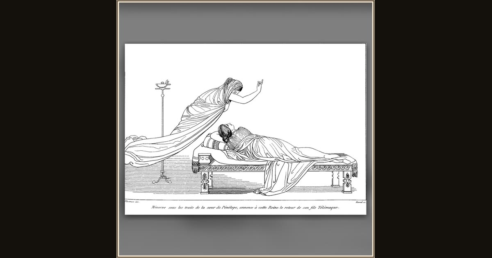

Penelope
John Flaxman · 1810 · Wikimedia Commons
Penelope lies asleep on a fringed couch while a veiled figure leans in at its head, one hand raised, a tall oil-lamp burning at left. Flaxman draws a scene from Book IV: Athena sends a phantom of Penelope's sister into her dream to promise that Telemachus will